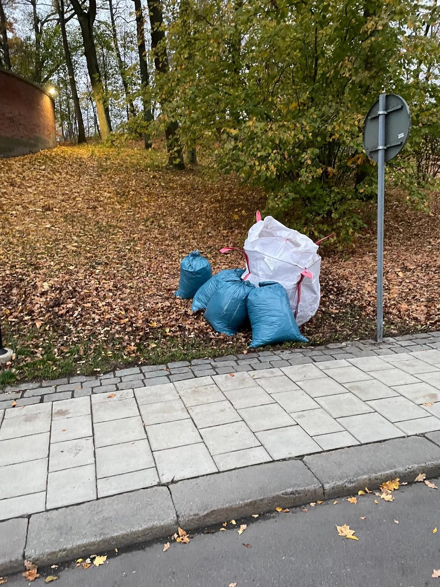

Trädgårdsavfall Stockholm
Vi på Avfallskonsulten erbjuder en pålitlig och flexibel tjänst för hämtning av trädgårdsavfall i Stockholm. Oavsett om det handlar om löv, grenar, buskar eller annan vegetation ser vi till att avfallet transporteras bort på ett enkelt sätt, när det passar dig! Våra rutiner säkerställer att trädgårdsavfallet hanteras på ett miljövänligt sätt, där materialet i största mån återvinns eller återbrukas. På så sätt bidrar vi tillsammans till en mer hållbar miljö.
-
4,9 av 5 på Reco231 omdömen från kunder
-
Kostnadsfritt platsbesökVi kommer ut och tittar innan vi lämnar pris
-
Fast pris per hämtningKärl och skyltar ingår, inga tillägg
-
Egen personal och egna bilarSamma chaufförer som känner er fastighet

Professionell hämtning av trädgårdsavfall i Stockholm
Vi på Avfallskonsulten erbjuder en pålitlig och flexibel tjänst för hämtning av trädgårdsavfall i Stockholm. Oavsett om det rör sig om löv, grenar, eller annan vegetation, ser vi till att avfallet hämtas när det passar dig. Våra rutiner säkerställer att avfallet hanteras på ett miljövänligt sätt som främjar återvinning och hållbarhet.
Hur fungerar vår tjänst för hämtning av trädgårdsavfall?
Vår tjänst för hämtning av trädgårdsavfall i Stockholm är både enkel och smidig. Du bokar en tid som passar dig, och vi kommer direkt till din adress för att samla in löv, grenar eller annan vegetation. Tack vare effektiva rutter och pålitliga transporter ser vi till att processen blir snabb, bekväm och så miljövänlig som möjligt.
- Boka en tid - välj en dag som passar dig bäst.
- Vi hämtar avfallet - direkt vid din bostad, trädgård eller fastighet.
- Transport och sortering - vi kör avfallet till miljöstationer för återvinning.
- Miljövänlig hantering - vi ser till att materialet återvinns eller återbrukas på bästa sätt.

Vad ingår i vår tjänst för hämtning av trädgårdsavfall i Stockholm?
Vår tjänst för trädgårdsavfall hämtning i Stockholm inkluderar upphämtning, lastning och transport av allt vanligt trädgårdsavfall, såsom löv, grenar, kvistar, gräsklipp och mindre stubbar. Vi ser till att avfallet tas om hand på ett hållbart sätt genom kompostering och återvinning, vilket bidrar till kretsloppet och minskar miljöpåverkan. Med vår effektiva service sparar du både tid och arbete, samtidigt som du gör ett klimatsmart val för din trädgård.
Varför välja Avfallskonsulten för ditt trädgårdsavfall i Stockholm?
Som ett ungt och engagerat företag är Avfallskonsulten det självklara valet för dig som behöver hjälp med trädgårdsavfall Stockholm. Vi erbjuder flexibla och personliga lösningar som anpassas efter dina behov, oavsett om det gäller en villa, radhus eller bostadsrättsförening. Med moderna verktyg för ruttoptimering kan vi planera transporter på ett smart sätt, vilket gör våra hämtningar både snabbare och mer miljövänliga än många andra aktörer. Vårt dedikerade team sätter alltid kundservice i första rummet och ser till att du som kund blir helt nöjd, samtidigt som vi bidrar till en mer hållbar avfallshantering i Stockholm.

Trädgårdsavfall Stockholm - smidiga lösningar för en ren och hållbar utemiljö
Trädgårdsavfall är en naturlig del av trädgårdsarbete, men det kan snabbt bli mer omfattande än man tror. Löv, grenar, buskar och annan vegetation tar ofta både plats och tid att hantera på egen hand. För bostadsrättsföreningar, fastighetsägare och privatpersoner i Stockholm kan professionell hjälp med insamling, transport och sortering av trädgårdsavfall Stockholm vara en enkel väg till en renare och mer trivsam utemiljö. Genom att låta oss ta hand om avfallet sparar du både tid och energi, samtidigt som du kan vara trygg i att allt material hanteras på ett miljövänligt sätt som bidrar till återvinning och hållbarhet.
Vanliga frågor om trädgårdsavfall Stockholm och hämtning
Vilken typ av trädgårdsavfall kan vi hämta?
Vi hämtar det mesta av trädgårdsavfall, inklusive löv, gräs, små grenar, buskar och vissna växter. Om du har frågor kring specifika typer av avfall, är du alltid välkommen att kontakta oss för mer information.
Hur ofta kan jag boka hämtning av trädgårdsavfall?
Du kan boka hämtning av trädgårdsavfall när det passar dig, vi erbjuder både engångshämtningar och återkommande hämtningar beroende på ditt behov och säsongens krav.
Hur snabbt kan ni hämta mitt trädgårdsavfall?
Vi erbjuder snabba och flexibla hämtningar beroende på ditt behov. Du kan boka en tid som passar dig, och vi kan ofta ordna hämtning inom några dagar.
Kostar det extra att hämta större mängder trädgårdsavfall?
Pris kan variera beroende på mängd och typ av avfall. Vid större volymer ger vi alltid en tydlig offert innan hämtning.
Vad händer med trädgårdsavfallet efter hämtning?
Allt trädgårdsavfall transporteras till miljöstationer där det sorteras, återvinns eller komposteras på ett miljövänligt sätt.
Kan ni hämta trädgårdsavfall direkt från min tomt?
Ja, vi hämtar avfallet direkt från din tomt eller fastighet. Du behöver inte flytta det till gatan om du inte vill.
Behöver trädgårdsavfallet vara förpackat i säckar eller buntat?
Vi rekommenderar att mindre grenar och löv placeras i säckar eller buntas för att underlätta hämtning, men vi kan anpassa oss efter situationen.
Erbjuder ni engångshämtning eller abonnemang?
Vi erbjuder både engångshämtning och abonnemangslösningar, så att du kan välja det som passar din trädgård eller fastighet bäst.
Kan både privatpersoner och BRF:er boka hämtning?
Ja, våra tjänster är tillgängliga för både privatpersoner, fastighetsägare och bostadsrättsföreningar i hela Stockholm.
Berätta om er fastighet, så återkommer vi med pris
Fyll i formuläret så hör vi av oss inom en arbetsdag, oftast samma dag.
- Kostnadsfritt platsbesök
- Fast pris per hämtning, kärl och skyltar ingår
- Egen personal och egna bilar
Vill du hellre ringa?08-684 278 88